P01 · 封面
这一页要解决的问题是：建立课程主题，不直接进入数学。 页面上建议这样放：标题：AI 模型导论与推理基础原理｜第一讲：从智能到感知器。副标题：AI 如何把输入变成判断。
讲的时候可以这样展开：今天我们不从大模型开始，而从最小的问题开始：一个系统怎样从输入得到判断？只要这个问题清楚了，后面的神经网络、大模型、推理计算都会容易很多。
第一讲 · 40 分钟
AI 如何把输入变成判断
文件入口：slides.pptx；本页为逐页 HTML 讲课大纲。
第一讲的简化目标是把原来一节课里偏抽象的 AI 模型概念拆到零基础可进入：先讲输入如何变成判断，不急着讲大模型结构，也不把训练公式铺满。这里保留 IPO、f(x)=y、样本、特征、标签、权重、偏置、感知器和 XOR，因为这些词会成为第二讲训练、推理和硬件计算的入口。
这一页要解决的问题是：建立课程主题，不直接进入数学。 页面上建议这样放：标题：AI 模型导论与推理基础原理｜第一讲：从智能到感知器。副标题：AI 如何把输入变成判断。
讲的时候可以这样展开：今天我们不从大模型开始，而从最小的问题开始：一个系统怎样从输入得到判断？只要这个问题清楚了，后面的神经网络、大模型、推理计算都会容易很多。
这一页要解决的问题是：用问题而不是定义开场，让学生先产生参与感。 页面上建议这样放：屏幕列出四个问题：计算器会算 1+1，算不算智能？贪吃蛇会找食物，算不算智能？AlphaGo 会下棋，算不算智能？ChatGPT 会回答，算不算理解？
讲的时候可以这样展开：不要马上给答案。先说：这些系统都有输入和输出，但我们对“智能”的感觉并不一样。今天的目标就是把这种感觉拆清楚。
如果要带一点互动，可以这样问：让学生举手投票：哪一个最像智能？哪一个最不像？
讲授时要收住边界：这里是在建立教学定义和工程直觉，不把它说成哲学或认知科学上的最终结论。
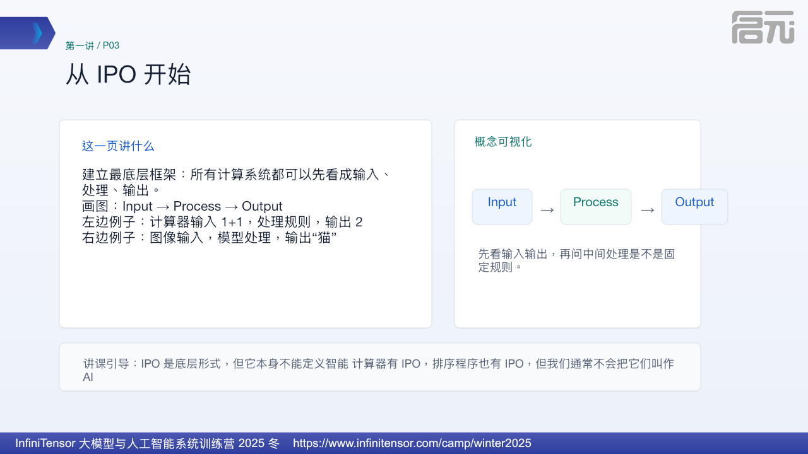
这一页要解决的问题是：建立最底层框架：所有计算系统都可以先看成输入、处理、输出。 页面上建议这样放：画图：Input → Process → Output。左边例子：计算器输入 1+1，处理规则，输出 2。右边例子：图像输入，模型处理，输出“猫”。
讲的时候可以这样展开：IPO 是底层形式，但它本身不能定义智能。计算器有 IPO，排序程序也有 IPO，但我们通常不会把它们叫作 AI。
讲授时要收住边界：不要把 IPO 讲成智能的充分条件，它只是后面所有模型的共同骨架。
这一页要解决的问题是：把“智能”的直觉落到任务复杂性和适应性。 页面上建议这样放：列出四个条件：环境变化；规则难写死；需要判断；输出对目标有效。
讲的时候可以这样展开：如果一个任务的规则非常固定，我们更倾向叫它程序或自动化。如果情境变化很多、规则写不完、系统还要做判断，我们才更容易说它表现出智能。
如果要带一点互动，可以这样问：问：自动售货机和扫地机器人哪个更像智能？为什么？
讲授时要收住边界：这里是在建立教学定义和工程直觉，不把它说成哲学或认知科学上的最终结论。
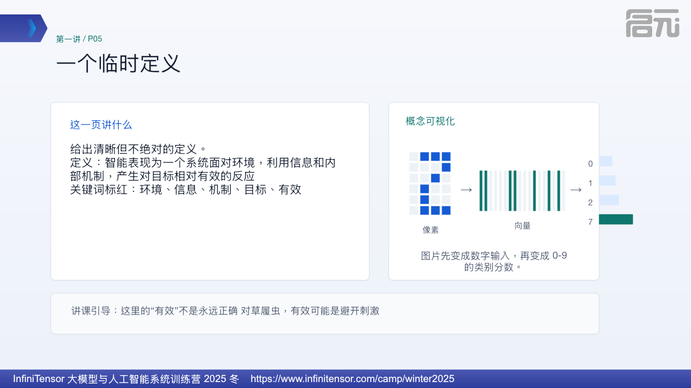
这一页要解决的问题是：给出清晰但不绝对的定义。 页面上建议这样放：定义：智能表现为一个系统面对环境，利用信息和内部机制，产生对目标相对有效的反应。关键词标红：环境、信息、机制、目标、有效。
讲的时候可以这样展开：这里的“有效”不是永远正确。对草履虫，有效可能是避开刺激；对 AlphaGo，有效是赢棋；对图像识别，有效是分类准确；对聊天机器人，有效是符合上下文。
讲授时要收住边界：这里不要说“智能的本质就是合理输出”，因为“合理”本身需要目标和评价标准。
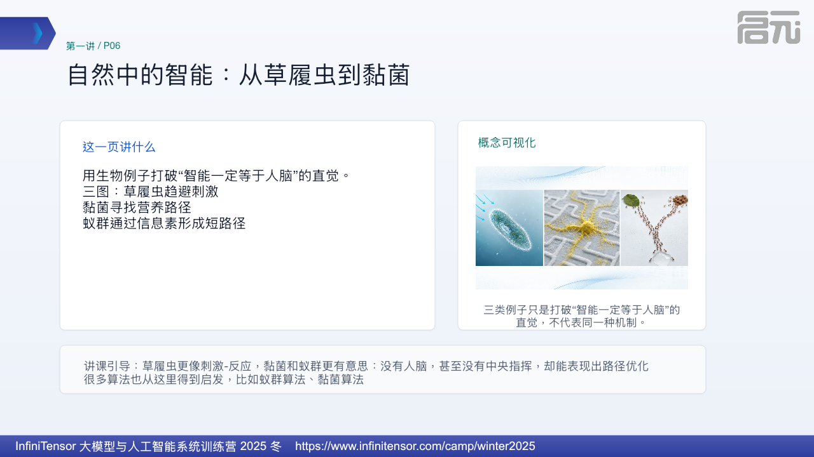
这一页要解决的问题是：用生物例子打破“智能一定等于人脑”的直觉。 页面上建议这样放：三图：草履虫趋避刺激；黏菌寻找营养路径；蚁群通过信息素形成短路径。
讲的时候可以这样展开：草履虫更像刺激-反应，黏菌和蚁群更有意思：没有人脑，甚至没有中央指挥，却能表现出路径优化。很多算法也从这里得到启发，比如蚁群算法、黏菌算法。
如果要带一点互动，可以这样问：问：如果没有大脑，也能表现出智能吗？
讲授时要收住边界：这里是在建立教学定义和工程直觉，不把它说成哲学或认知科学上的最终结论。
这一页右侧配图用来帮助学生看见“没有人脑也可能有适应性行为”。讲的时候要明确：草履虫、黏菌、群体路径不是同一种智能机制，只是用来打破“智能一定等于人脑”的直觉。
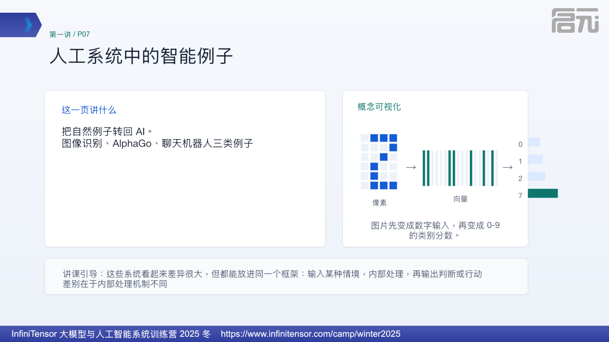
这一页要解决的问题是：把自然例子转回 AI。 页面上建议这样放：图像识别、AlphaGo、聊天机器人三类例子。
讲的时候可以这样展开：这些系统看起来差异很大，但都能放进同一个框架：输入某种情境，内部处理，再输出判断或行动。差别在于内部处理机制不同。
讲授时要收住边界：这里是在建立教学定义和工程直觉，不把它说成哲学或认知科学上的最终结论。
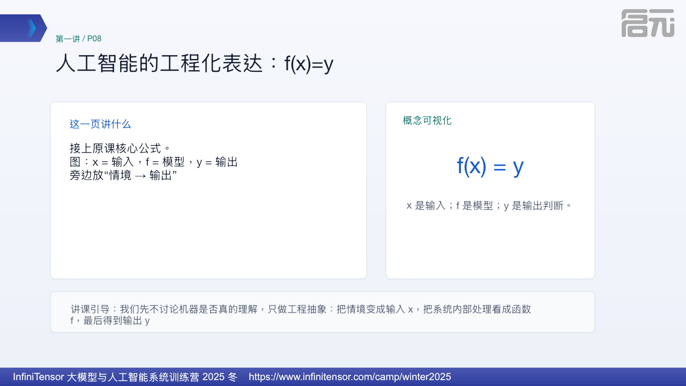
这一页要解决的问题是：接上原课核心公式。 页面上建议这样放：图：x = 输入，f = 模型，y = 输出。旁边放“情境 → 输出”。
讲的时候可以这样展开：我们先不讨论机器是否真的理解，只做工程抽象：把情境变成输入 x，把系统内部处理看成函数 f，最后得到输出 y。
这里可以补一句背景：函数、输入、输出。
讲授时要收住边界：要强调这是建模方式，不代表智能真的只有函数这么简单。
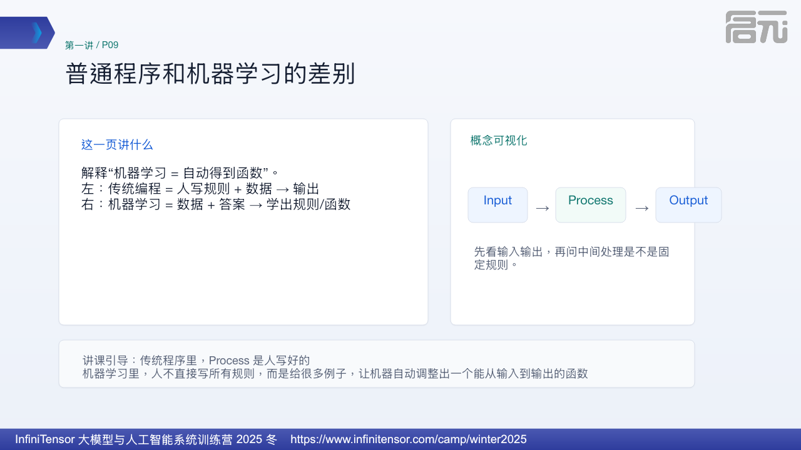
这一页要解决的问题是：解释“机器学习 = 自动得到函数”。 页面上建议这样放：左：传统编程 = 人写规则 + 数据 → 输出。右：机器学习 = 数据 + 答案 → 学出规则/函数。
讲的时候可以这样展开：传统程序里，Process 是人写好的。机器学习里，人不直接写所有规则，而是给很多例子，让机器自动调整出一个能从输入到输出的函数。
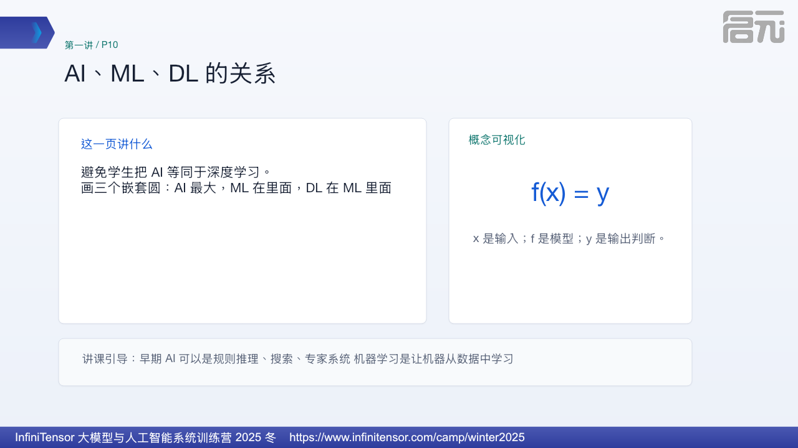
这一页要解决的问题是：避免学生把 AI 等同于深度学习。 页面上建议这样放：画三个嵌套圆：AI 最大，ML 在里面，DL 在 ML 里面。
讲的时候可以这样展开：早期 AI 可以是规则推理、搜索、专家系统；机器学习是让机器从数据中学习；深度学习是用多层神经网络学习复杂函数。
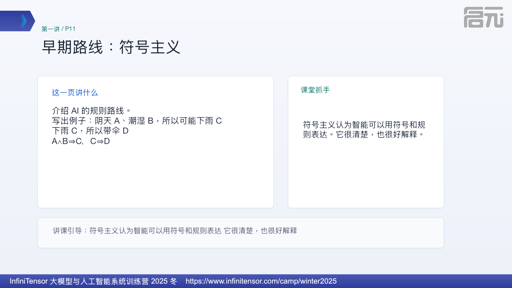
这一页要解决的问题是：介绍 AI 的规则路线。 页面上建议这样放：写出例子：阴天 A、潮湿 B，所以可能下雨 C；下雨 C，所以带伞 D。A∧B⇒C，C⇒D。
讲的时候可以这样展开：符号主义认为智能可以用符号和规则表达。它很清楚，也很好解释。
这一页要解决的问题是：说明专家系统如何工作。 页面上建议这样放：画图：输入病例 → 知识库规则 → 推理机 → 诊断建议。
讲的时候可以这样展开：专家系统把专家经验写成规则，再让推理机一步步推导。这在某些专业场景中曾经很重要。
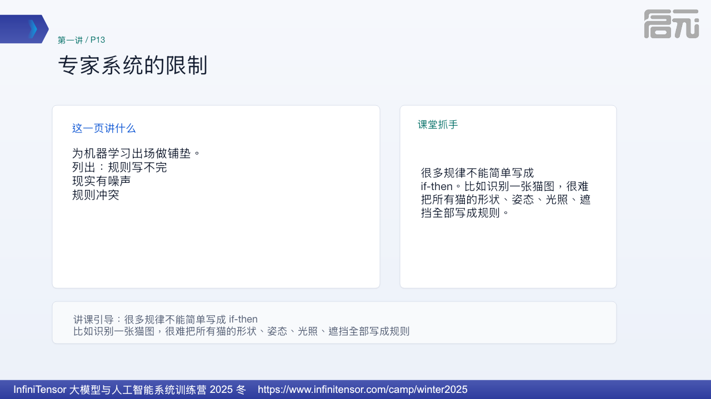
这一页要解决的问题是：为机器学习出场做铺垫。 页面上建议这样放：列出：规则写不完；现实有噪声；规则冲突；新知识难自动学习。
讲的时候可以这样展开：很多规律不能简单写成 if-then。比如识别一张猫图，很难把所有猫的形状、姿态、光照、遮挡全部写成规则。
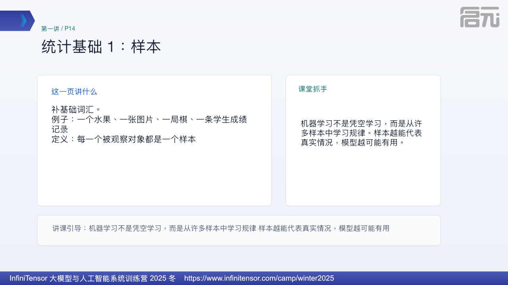
这一页要解决的问题是：补基础词汇。 页面上建议这样放：例子：一个水果、一张图片、一局棋、一条学生成绩记录。定义：每一个被观察对象都是一个样本。
讲的时候可以这样展开：机器学习不是凭空学习，而是从许多样本中学习规律。样本越能代表真实情况，模型越可能有用。
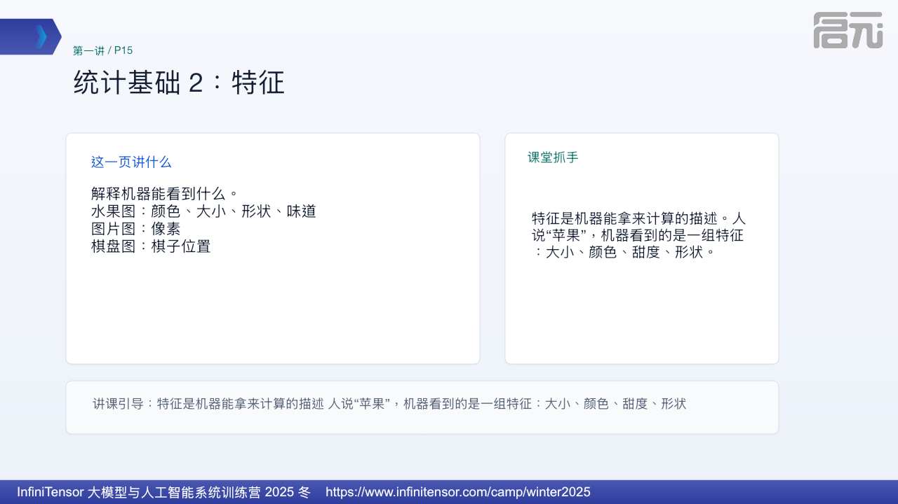
这一页要解决的问题是：解释机器能看到什么。 页面上建议这样放：水果图：颜色、大小、形状、味道。图片图：像素。棋盘图：棋子位置。
讲的时候可以这样展开：特征是机器能拿来计算的描述。人说“苹果”，机器看到的是一组特征：大小、颜色、甜度、形状。
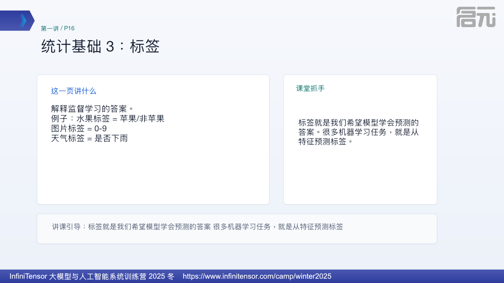
这一页要解决的问题是：解释监督学习的答案。 页面上建议这样放：例子：水果标签 = 苹果/非苹果；图片标签 = 0-9；天气标签 = 是否下雨。
讲的时候可以这样展开：标签就是我们希望模型学会预测的答案。很多机器学习任务，就是从特征预测标签。
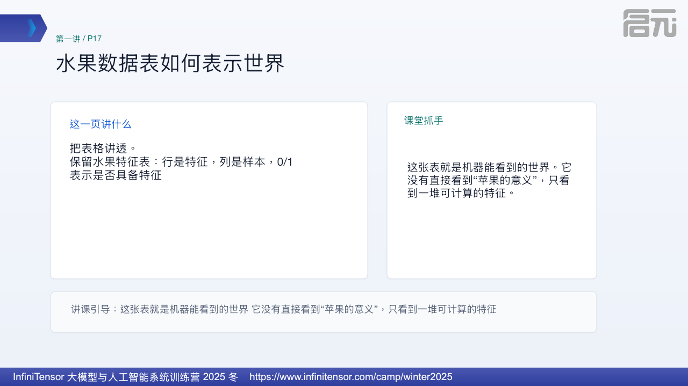
这一页要解决的问题是：把表格讲透。 页面上建议这样放：保留水果特征表：行是特征，列是样本，0/1 表示是否具备特征。
讲的时候可以这样展开：这张表就是机器能看到的世界。它没有直接看到“苹果的意义”，只看到一堆可计算的特征。
如果要带一点互动，可以这样问：让学生指出：苹果这一列哪些特征是 1？
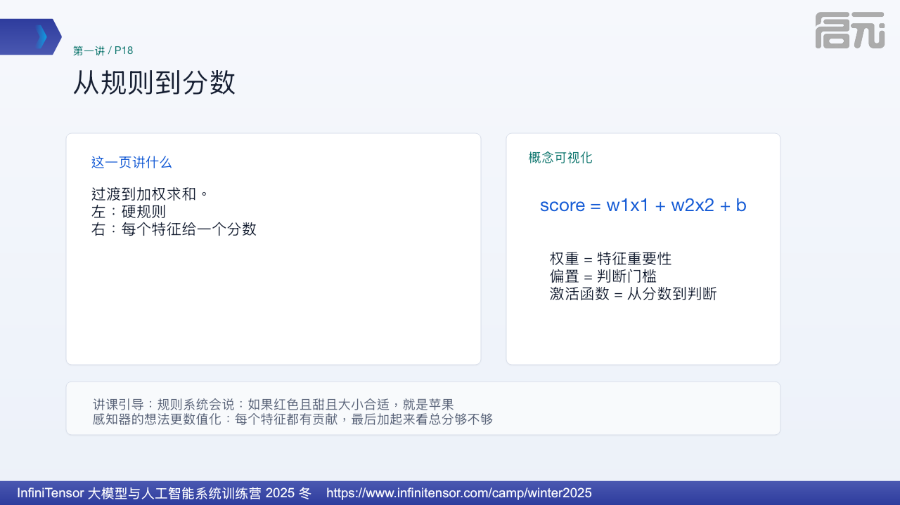
这一页要解决的问题是：过渡到加权求和。 页面上建议这样放：左：硬规则。右：每个特征给一个分数。
讲的时候可以这样展开：规则系统会说：如果红色且甜且大小合适，就是苹果。感知器的想法更数值化：每个特征都有贡献，最后加起来看总分够不够。
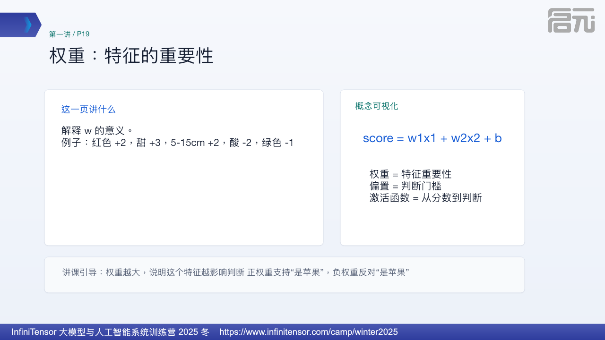
这一页要解决的问题是：解释 w 的意义。 页面上建议这样放：例子：红色 +2，甜 +3，5-15cm +2，酸 -2，绿色 -1。
讲的时候可以这样展开：权重越大，说明这个特征越影响判断。正权重支持“是苹果”，负权重反对“是苹果”。
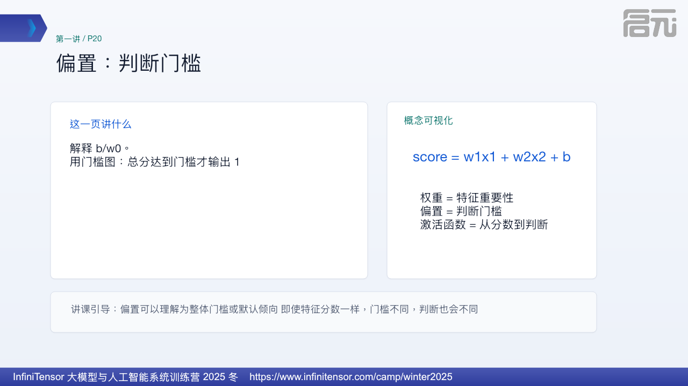
这一页要解决的问题是：解释 b/w0。 页面上建议这样放：用门槛图：总分达到门槛才输出 1。
讲的时候可以这样展开：偏置可以理解为整体门槛或默认倾向。即使特征分数一样，门槛不同，判断也会不同。
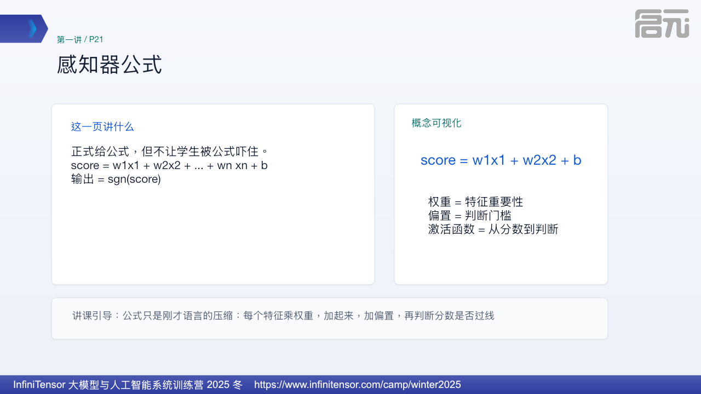
这一页要解决的问题是：正式给公式，但不让学生被公式吓住。 页面上建议这样放：score = w1x1 + w2x2 + ... + wn xn + b。输出 = sgn(score)。
讲的时候可以这样展开：公式只是刚才语言的压缩：每个特征乘权重，加起来，加偏置，再判断分数是否过线。
这里可以补一句背景：线性模型、参数。
这里的阶跃函数按教学二分类处理：score 大于等于阈值输出 1，否则输出 0。不要把数学里的 sgn 取值细节展开成主线。
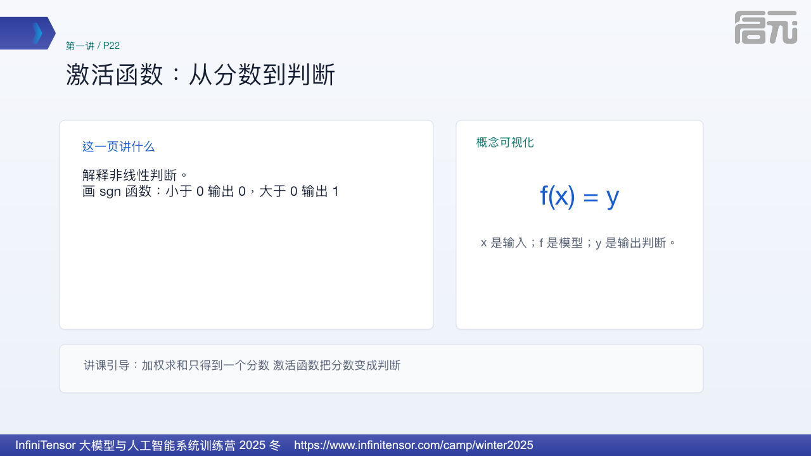
这一页要解决的问题是：解释非线性判断。 页面上建议这样放：画 sgn 函数：小于 0 输出 0，大于 0 输出 1。
讲的时候可以这样展开：加权求和只得到一个分数。激活函数把分数变成判断。这里先用硬阈值，后面会说为什么训练时常用别的函数。
这里的阶跃函数按教学二分类处理：score 大于等于阈值输出 1，否则输出 0。不要把数学里的 sgn 取值细节展开成主线。
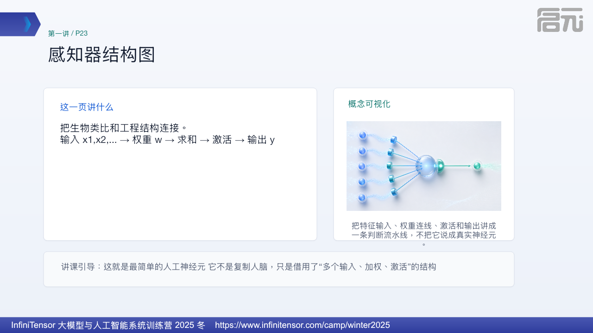
这一页要解决的问题是：把生物类比和工程结构连接。 页面上建议这样放：输入 x1,x2,... → 权重 w → 求和 → 激活 → 输出 y。
讲的时候可以这样展开：这就是最简单的人工神经元。它不是复制人脑，只是借用了“多个输入、加权、激活”的结构。
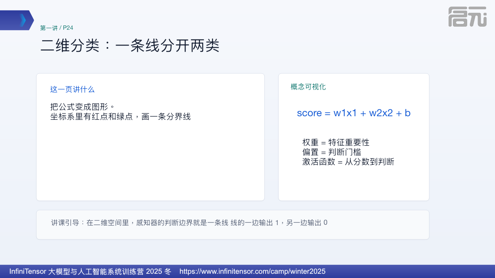
这一页要解决的问题是：把公式变成图形。 页面上建议这样放：坐标系里有红点和绿点，画一条分界线。
讲的时候可以这样展开：在二维空间里，感知器的判断边界就是一条线。线的一边输出 1，另一边输出 0。
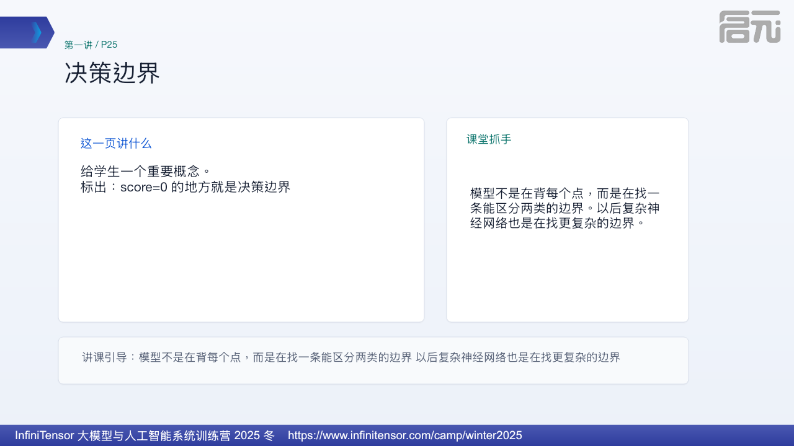
这一页要解决的问题是：给学生一个重要概念。 页面上建议这样放：标出：score=0 的地方就是决策边界。
讲的时候可以这样展开：模型不是在背每个点，而是在找一条能区分两类的边界。以后复杂神经网络也是在找更复杂的边界。
这里可以补一句背景：决策边界。
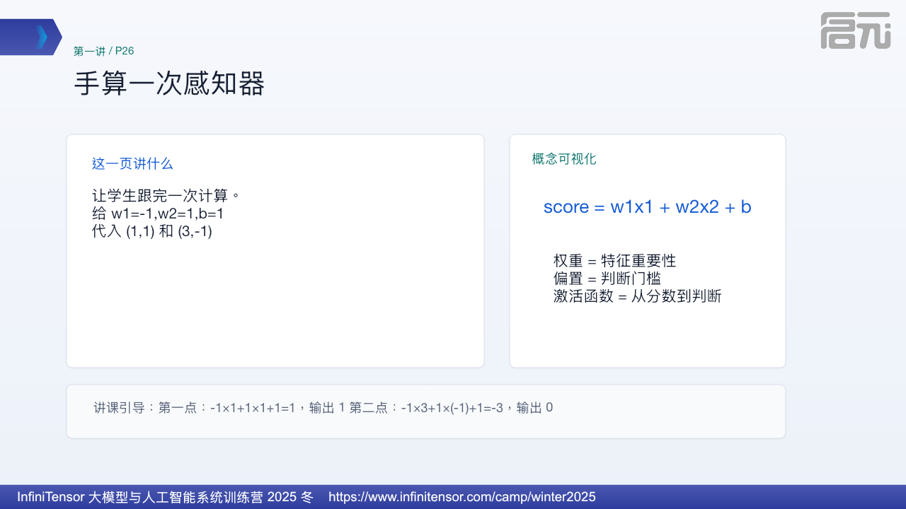
这一页要解决的问题是：让学生跟完一次计算。 页面上建议这样放：给 w1=-1,w2=1,b=1；代入 (1,1) 和 (3,-1)。
讲的时候可以这样展开：第一点：-1×1+1×1+1=1，输出 1。第二点：-1×3+1×(-1)+1=-3，输出 0。慢一点，让学生看到公式真的只是算分数。
如果要带一点互动，可以这样问：请学生自己代一个点，例如 (0,1)。
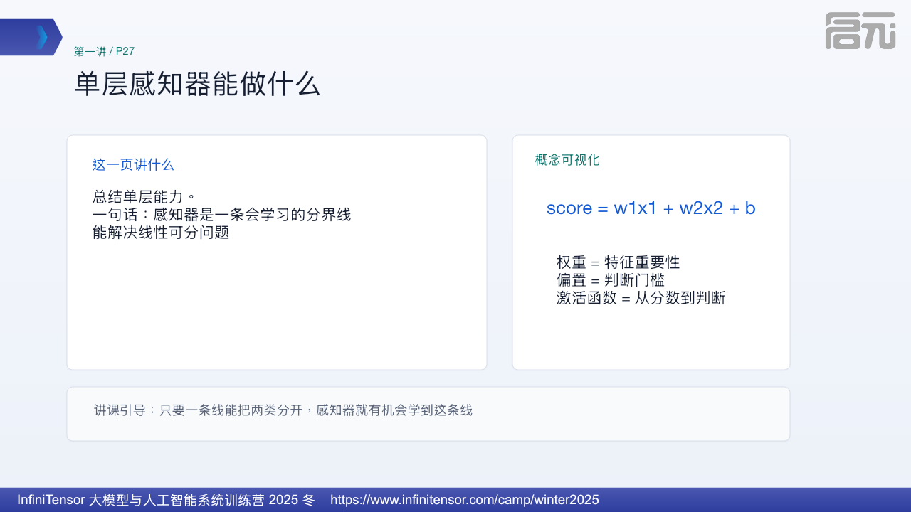
这一页要解决的问题是：总结单层能力。 页面上建议这样放：一句话：感知器是一条会学习的分界线。能解决线性可分问题。
讲的时候可以这样展开：只要一条线能把两类分开，感知器就有机会学到这条线。
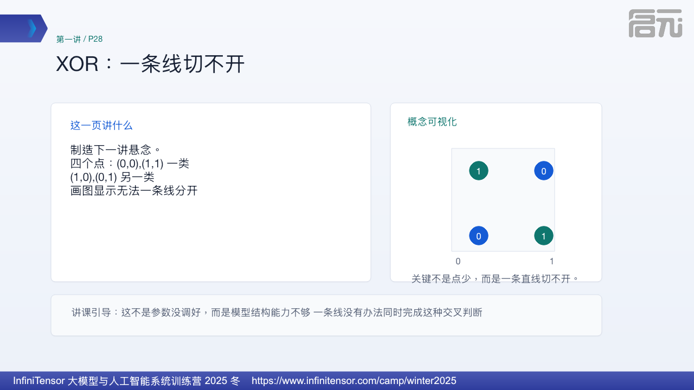
这一页要解决的问题是：制造下一讲悬念。 页面上建议这样放：四个点：(0,0),(1,1) 一类；(1,0),(0,1) 另一类。画图显示无法一条线分开。
讲的时候可以这样展开：这不是参数没调好，而是模型结构能力不够。一条线没有办法同时完成这种交叉判断。
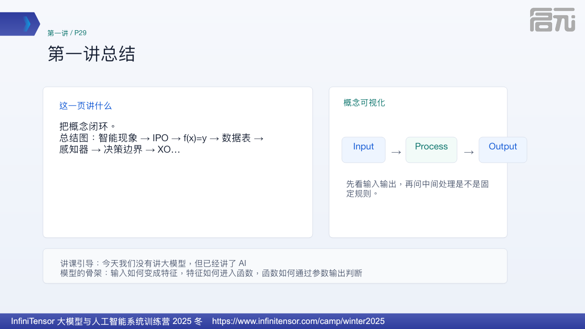
这一页要解决的问题是：把概念闭环。 页面上建议这样放：总结图：智能现象 → IPO → f(x)=y → 数据表 → 感知器 → 决策边界 → XOR 限制。
讲的时候可以这样展开：今天我们没有讲大模型，但已经讲了 AI 模型的骨架：输入如何变成特征，特征如何进入函数，函数如何通过参数输出判断。
这一页要解决的问题是：自然过渡。 页面上建议这样放：屏幕问题：如果一条线不够，多条线能不能？如果多个判断组合起来，会发生什么？模型如何自己学到这些线？
讲的时候可以这样展开：下一讲会回答三个问题：为什么要多层？参数怎么训练？训练好的模型在硬件上到底做什么？
来源：第一讲_从智能到感知器_课程文档.docx；原始 32 页 PDF 和 291MB 视频只作为源材料参考，不放入这个干净发布包。